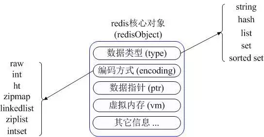
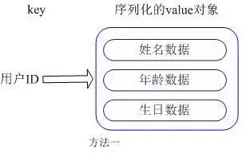
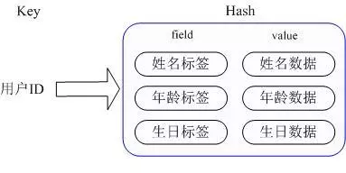

Redis常用数据类型存储与优化
Redis常用的数据类型
Redis 最为常用的数据类型主要有以下五种：
• String
• Hash
• List
• Set
• Sorted set
在具体描述这几种数据类型之前，我们先通过一张图了解下 Redis 内部内存管理中是如何描述这些不同数据类型的：

Redis 内部使用一个 redisObject 对象来表示所有的 key 和 value，redisObject 最主要的信息如上图所示；type 代表一个 value 对象具体是何种数据类型，encoding 是不同数据类型在 redis 内部的存储方式，比如：type=string 代表 value 存储的是一个普通字符串，那么对应的 encoding 可以是 raw 或者是 int，如果是 int 则代表实际 redis 内部是按数值型类存储和表示这个字符串的，当然前提是这个字符串本身可以用数值表示，比如：”123″ “456”这样的字符串;
五种数据类型的使用和内部实现方式
String
常用命令：
set,get,decr,incr,mget 等
应用场景:
String 是最常用的一种数据类型，普通的 key/value 存储都可以归为此类;
实现方式：
String 在 redis 内部存储默认就是一个字符串，被 redisObject 所引用，当遇到 incr,decr 等操作时会转成数值型进行计算，此时 redisObject 的 encoding 字段为int。
Hash
常用命令:
hget,hset,hgetall 等
应用场景:
简单举个实例来描述下 Hash 的应用场景，比如我们要存储一个用户信息对象数据，包含以下信息： 用户 ID 为查找的 key，存储的 value 用户对象包含姓名，年龄，生日等信息，如果用普通的 key/value 结构来存储，主要有以下2种存储方式：

第一种方式将用户 ID 作为查找 key，把其他信息封装成一个对象以序列化的方式存储，这种方式的缺点是，增加了序列化/反序列化的开销，并且在需要修改其中一项信息时，需要把整个对象取回，并且修改操作需要对并发进行保护，引入CAS等复杂问题。
在实际的项目中就是用了这种方式来缓存用户信息。
第二种方法是这个用户信息对象有多少成员就存成多少个 key-value 对儿，用用户 ID +对应属性的名称作为唯一标识来取得对应属性的值，虽然省去了序列化开销和并发问题，但是用户 ID 为重复存储，如果存在大量这样的数据，内存浪费很大。
那么 Redis 提供的 Hash 很好的解决了这个问题，Redis 的 Hash 实际是内部存储的 Value 为一个 HashMap，并提供了直接存取这个 Map 成员的接口，如下图：

也就是说，Key 仍然是用户 ID，value 是一个 Map，这个 Map 的 key 是成员的属性名，value 是属性值，这样对数据的修改和存取都可以直接通过其内部 Map 的 Key（Redis 里称内部 Map 的 key 为 field），也就是通过 key（用户 ID） + field（属性标签）就可以操作对应属性数据了，既不需要重复存储数据，也不会带来序列化和并发修改控制的问题。很好的解决了问题。
这里同时需要注意，Redis 提供了接口（hgetall）可以直接取到全部的属性数据，但是如果内部 Map 的成员很多，那么涉及到遍历整个内部 Map 的操作，由于 Redis 单线程模型的缘故，这个遍历操作可能会比较耗时，而让其它客户端的请求完全不响应，这点需要格外注意；
实现方式:
上面已经说到 Redis Hash 对应 Value 内部实际就是一个 HashMap，实际这里会有2种不同实现，这个 Hash 的成员比较少时 Redis 为了节省内存会采用类似一维数组的方式来紧凑存储，而不会采用真正的 HashMap 结构，对应的 value redisObject 的 encoding 为 zipmap，当成员数量增大时会自动转成真正的 HashMap，此时 encoding 为 ht。
List
常用命令:
lpush,rpush,lpop,rpop,lrange等。
应用场景:
Redis list 的应用场景非常多，也是 Redis 最重要的数据结构之一；
实现方式:
Redis list 的实现为一个双向链表，即可以支持反向查找和遍历，更方便操作，不过带来了部分额外的内存开销，Redis 内部的很多实现，包括发送缓冲队列等也都是用的这个数据结构。
Set
常用命令:
sadd,spop,smembers,sunion 等。
应用场景:
Redis set 对外提供的功能与 list 类似是一个列表的功能，特殊之处在于 set 是可以自动排重的，当你需要存储一个列表数据，又不希望出现重复数据时，set 是一个很好的选择，并且 set 提供了判断某个成员是否在一个 set 集合内的重要接口，这个也是 list 所不能提供的。
实现方式:
set 的内部实现是一个 value 永远为 null 的 HashMap，实际就是通过计算 hash 的方式来快速排重的，这也是 set 能提供判断一个成员是否在集合内的原因。
Sorted set
常用命令:
zadd,zrange,zrem,zcard等
应用场景:
Redis sorted set 的使用场景与 set 类似，区别是 set 不是自动有序的，而 sorted set 可以通过用户额外提供一个优先级（score）的参数来为成员排序，并且是插入有序的，即自动排序。当你需要一个有序的并且不重复的集合列表，那么可以选择 sorted set 数据结构，比如 twitter 的 public timeline 可以以发表时间作为 score 来存储，这样获取时就是自动按时间排好序的。
实现方式:
Redis sorted set 的内部使用 HashMap 和跳跃表（SkipList）来保证数据的存储和有序，HashMap 里放的是成员到 score 的映射，而跳跃表里存放的是所有的成员，排序依据是 HashMap 里存的 score，使用跳跃表的结构可以获得比较高的查找效率，并且在实现上比较简单
常用内存优化手段
最重要的一点是不要开启 Redis 的 VM 选项，即虚拟内存功能，这个本来是作为 Redis 存储超出物理内存数据的一种数据在内存与磁盘换入换出的一个持久化策略，但是其内存管理成本也非常的高，并且此种持久化策略并不成熟。
最好设置下 redis.conf 中的 maxmemory 选项，该选项是告诉 Redis 当使用了多少物理内存后就开始拒绝后续的写入请求，该参数能很好的保护好你的 Redis 不会因为使用了过多的物理内存而导致 swap，最终严重影响性能甚至崩溃
Redis 为不同数据类型分别提供了一组参数来控制内存使用，我们在前面详细分析过 Redis Hash 是 value 内部为一个 HashMap，如果该 Map 的成员数比较少，则会采用类似一维线性的紧凑格式来存储该 Map，即省去了大量指针的内存开销，这个参数控制对应在 redis.conf 配置文件中下面2项：
hash-max-zipmap-entries 64
hash-max-zipmap-value 512
hash-max-zipmap-entries
含义是当 value 这个 Map 内部不超过多少个成员时会采用线性紧凑格式存储，默认是64，即 value 内部有64个以下的成员就是使用线性紧凑存储，超过该值自动转成真正的 HashMap。
hash-max-zipmap-value 含义是当 value 这个 Map 内部的每个成员值长度不超过多少字节就会采用线性紧凑存储来节省空间。
以上2个条件任意一个条件超过设置值都会转换成真正的 HashMap，也就不会再节省内存了，那么这个值是不是设置的越大越好呢，答案当然是否定的，HashMap 的优势就是查找和操作的时间复杂度都是 O(1) 的，而放弃 Hash 采用一维存储则是 O(n) 的时间复杂度，如果成员数量很少，则影响不大，否则会严重影响性能，所以要权衡好这个值的设置，总体上还是最根本的时间成本和空间成本上的权衡。
同样类似的参数还有：
list-max-ziplist-entries 512
说明：list 数据类型多少节点以下会采用去指针的紧凑存储格式。
list-max-ziplist-value 64
说明：list 数据类型节点值大小小于多少字节会采用紧凑存储格式。
set-max-intset-entries 512
说明：set 数据类型内部数据如果全部是数值型，且包含多少节点以下会采用紧凑格式存储。
最后 Redis 内部实现没有对内存分配方面做过多的优化，在一定程度上会存在内存碎片，不过大多数情况下这个不会成为 Redis 的性能瓶 颈，不过如果在 Redis 内部存储的大部分数据是数值型的话，Redis 内部采用了一个 shared integer 的方式来省去分配内存的开销，即在系统启动时先分配一个从 1~n 那么多个数值对象放在一个池子中，如果存储的数据恰好是这个数值范围内的数据，则直接从池子里取出该对象，并且通过引用计数的方式来共享，这样在系统存储了大量数值下，也能一定程度上节省内存并且提高性能，这个参数值 n 的设置需要修改源代码中的一行宏定义 REDIS_SHARED_INTEGERS，该值 默认是 10000，可以根据自己的需要进行修改，修改后重新编译就可以。